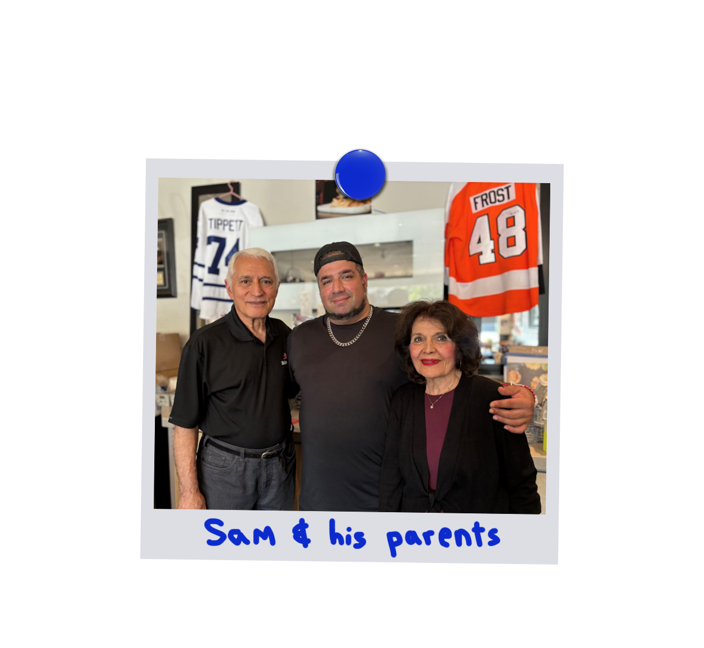
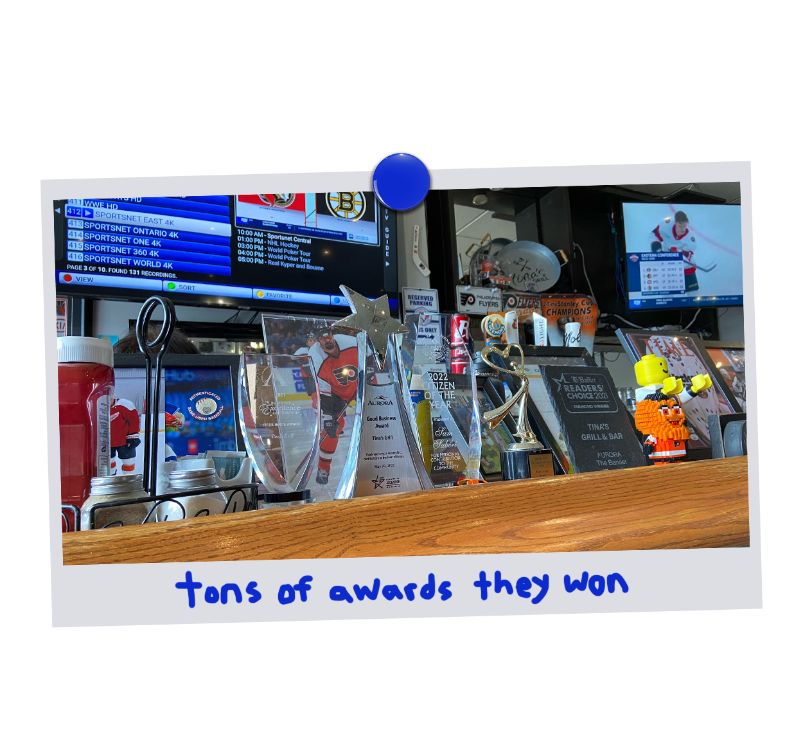
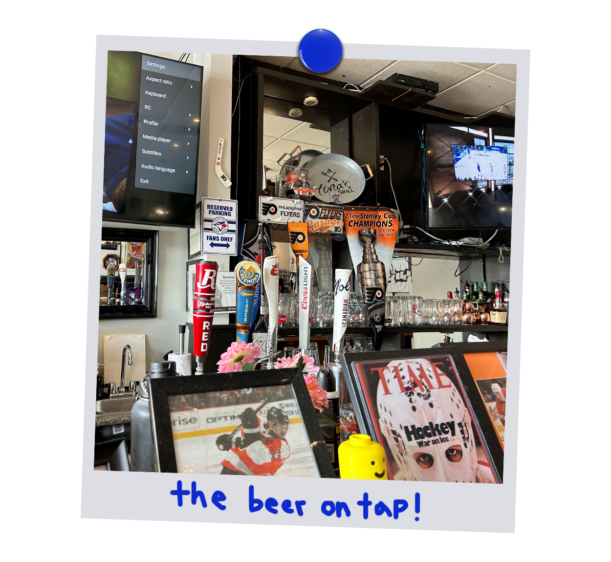
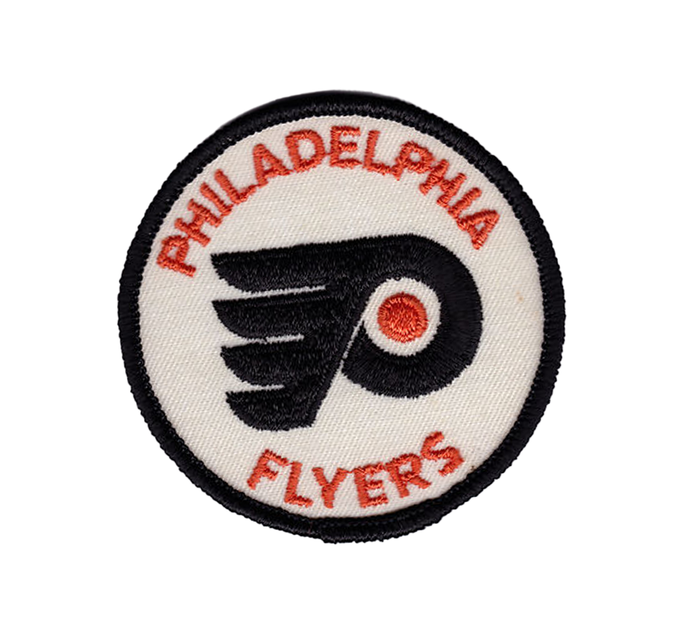
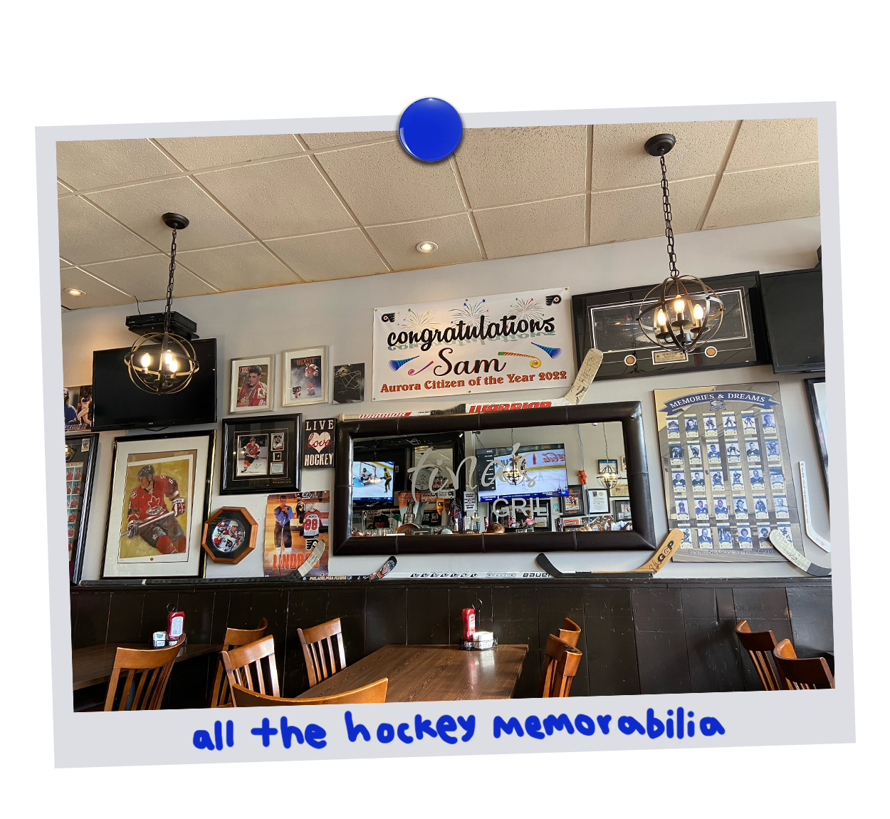

TINA'S GRILL
WEBSITE
2025.03.03







OLD/NEW COMPARISON
The original website and
the 4 redesigned pages
Navigate the websites using the navigation bar and compare the two using the toggle.
This project taught me a lot about my own creative process and develop a new sketching method
using a "building block" method which I now use very often in other design projects.
This also
introduced me to sitemaps and the UI/UX components of web design which sparked my interest in the field.
I really enjoyed this project: using my bold design style and interest in hockey to create a website
for a small local restaurant I know.
OLD DESIGN CRITIQUE
- Home: large slideshow images have poor resolution which makes the food look unappetizing. Lack of text hierarchy and contradicting information makes it difficult for users to find information quickly. The tone does not match other pages or the energy of the brand. As this page is users' first impression of the company, the issues need to be addressed.
- Menu: excessive amount of text, visually monotonous, and large amount of missing information like the dessert or drinks menu (shocking since this is a bar). The menu being simply a collection of pdf pages feels low-effort and unprofessional.
- Gallery: lack of alt tags and no image descriptions. The gallery images only feature food, none of the interior (important for dine-in restaurants) and event images. This is a missed opportunity to show some of the store's personality.
- Contact: redundant — the whole content of the page can also be found at the bottom of the landing page.
Tina’s Grill website has three big problems:
- The older style and dull appearance
- The missing information
- The inefficient information layout
BUSINESS RESEARCH
The first step to finding the brand's values and desired image was to visit the restaurant.
Going there
for the first time with my brother for lunch, I had the chance to talk with the owner, Sam Saberi, who was
our waiter. We talked about how he started his career in the food industry and later opened his own restaurant
with his father.
Visiting the location I also saw the many awards Sam and Tina's Grill had won since their
opening like: Citizen of the Year Award, Best Wings in Town, and Good Business Award.
What shocked me the most
was the amount of hockey memorabilia Sam had collected and displayed in the restaurant, it was everywhere! His
favourite team was obviously the NHL's Philadelphia Flyers and the MLB's Blue Jays.
Going also allowed me to
see how Sam and his team worked and how they greeted their customers by their names, like they we're friends.
It did not feel like a business transaction but like a big family barbecue.
UPDATED SITEMAPS
Planning: one of the big problems identified in the critique was
the amount of missing information. To keep the website organized and navigation intuitive, this would
mean redesigning the sitemap. Notably, adding a bar and dessert section on the menu page, swapping the
Contact Us page for About Us, showcasing awards, events and family story.
Result: the new sitemap is much more complex but the result is
navigation that feels intuitive.
- Home: now features daily specials and favourites to showcase the food
- Menu: now has all the information it should and is neatly divided into the bar menu and grill menu
- Gallery: features pictures of the interior, events and the bar so users get a sense of where they are going and who the owners are
- About Us: replaces the Contact Us page: a new addition that showcases awards, the family's story and community events
- Booking: now its own page instead of being a popup form, making it easier for users to access from anywhere on the website since Tina’s is a by-reservation only restaurant
REDESIGN SKETCHES
The Big Idea: one thing that was clear from the start was that I wanted to bring
some life to this website: bold colours, energetic graphics to give it a look that says "Come watch a game with us!"
Because this small town restaurant is first and foremost a spot for the community to meet over good food. As a hockey
fan myself, I decided to focus the owner's love for the sport. This gives the whole website fun personality with hockey
themed taglines and section headers like: "Taking Home the Trophies" or "Score Big."
Process: I started by making large detailed
sketches before finding that I would often change my mind halfway through or make mistakes and have to start the whole page over
again which was quite tiresome. So, I decided to instead use smaller square papers and sketch individual sections of the landing
page like the header, pitch, favourites, come visit, and specials. This way, I could assemble
the smaller papers in various orders and try different combinations without having to redraw the whole layout each time.
DESIGN RATIONALE
Design Improvements:
- Enhanced readability
- Stronger graphics & colours
- Emphasis on restaurant's fun tone & social aspect
- Hockey imagery and language enhances the sports bar theme
- Images of the interior to establish the atmosphere
- Picture of the owners to build trust
Content Improvements:
- No missing information
- About Us page instead of useless Contact Us
- Family history behind the restaurant
- Community events section to show involvement and authenticity
- Menu page divided into tabs for easy navigation
Usability Improvements:
- Dynamic "Today's Hours" feature at the top of the page instead of at the bottom
- Large "Book A Table" button for easy access
- Menu tabs make the page less text-heavy
- Image descriptions for all images on the website for accessibility